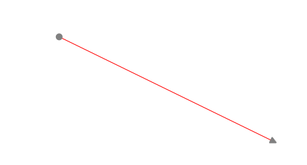

This topic describes two properties:
· LineStyle
· DecoratorStyle
Line Style
A connector can be customized by specifying the values under the LineStyle property. The various properties under LineStyle are,
· Fill - Specifies the color used to fill the connector.
· StrokeThickness - Specifies the thickness value for the connector's border.
· Stroke - Specifies the color used for the border of the connector.
· StrokeStartLineCap - Specifies the shape to be used at the start of a line or segment.
· StrokeEndLineCap - Specifies the shape at the end of a line or segment.
· StrokeLineJoin - Specifies the shape that joins two lines or segments.
· StrokeDashArray - Specifies a collection of double values that indicate the pattern of dashes and gaps used to outline shapes.
As an example, the Stroke property can be applied as follows.
|
[C#]
LineConnector l1 = new LineConnector(); l1.HeadNode = n1; l1.TailNode = n2; l1.ConnectorType = ConnectorType.Bezier; l1.LineStyle.Stroke = Brushes.Red; diagramModel.Connections.Add(l1); |
|
[VB]
Dim l1 As New LineConnector() l1.HeadNode = n1 l1.TailNode = n2 l1.ConnectorType = ConnectorType.Bezier l1.LineStyle.Stroke = Brushes.Red diagramModel.Connections.Add(l1) |

Figure 78: LineStyle
CustomPathStyle
A connector can be customized using CustomPathStyle. The CustomPathStyle property enables you to customize the appearance of LineConnector.
Properties
Table 37: Property/ies Table
|
Property |
Description |
Type |
Data Type |
Reference links |
|
CustomPathStyle |
Get or Set CustomPathStyle for LineConnector |
Dependency Property |
Style |
NA |
Applying Style for CustomPathStyle
Appearance of the LineConnector can be customized by applying style for the CustomPathStyle property. Style can be applied for CustomPathStyle as illustrated in the following code:
· Through XAML
|
[XAML] <Window.Resources> <Style TargetType="{x:Type Path}" x:Key="Deco1"> <Setter Property="Stroke" Value="Red" /> </Style> </Window.Resources>
<Style TargetType="{x:Type syncfusion:LineConnector}" > <Setter Property="HeadDecoratorShape" Value="Diamond" /> <Setter Property="TailDecoratorShape" Value="Diamond"/> <!--set the stroke color--> <Setter Property="CustomPathStyle" Value ="{StaticResource Deco1}> </Setter> </Style> |
· Through Code-behind
|
[C#] LineConnector l1 = new LineConnector(); l1.ConnecorType = ConnectorType.Bezier; l1.HeadDecoratorShape = DecoratorShape.Custom; l1.StartPointPosition = New Point(100, 100); l1.EndPointPosition = New Point(200, 200); l1.CustomPathStyle = this.Resources["Deco1"] as Style; diagramModel.Connections.Add(l1); |
|
[VB] Dim l1 As New LineConnector() l1.ConnectorType = ConnectorType.Bezier l1.HeadDecoratorShape = DecoratorShape.Custom l1.StartPointPosition = New Point(100, 100) l1.EndPointPosition = New Point(200, 200) l1.CustomPathStyle = TryCast(Me.Resources("Deco1"), Style) diagramModel.Connections.Add(l1) |

Figure 79: Customized LineConnector
DecoratorStyle
The decorator shapes used for the connector can be customized by specifying the property values under the DecoratorStyle property. To change the decorator style, the HeadDecoratorStyle and TailDecoratorStyle properties can be used.
The various properties under the DecoratorStyle property are as follows.
· Fill - Specifies the color to be used to fill the decorator.
· StrokeThickness - Specifies the thickness value for the decorator's border.
· Stroke - Specifies the color to be used for the border of the decorator.
· StrokeStartLineCap - Specifies the shape used at the start of a line or segment.
· StrokeEndLineCap - Specifies the shape at the end of a line or segment.
· StrokeLineJoin - Specifies the shape that joins two lines or segments.
· StrokeDashArray - Specifies a collection of double values that indicate the pattern of dashes and gaps used to outline shapes.
An example of the Stroke property can be applied to the head decorator as follows.
|
[C#]
LineConnector l1 = new LineConnector(); l1.HeadNode = n1; l1.TailNode = n2; l1.ConnectorType = ConnectorType.Bezier; l1.HeadDecoratorStyle.Stroke = Brushes.Red; l1.TailDecoratorStyle.Stroke = Brushes.Red; diagramModel.Connections.Add(l1); |
|
[VB]
Dim l1 As New LineConnector() l1.HeadNode = n1 l1.TailNode = n2 l1.ConnectorType = ConnectorType.Bezier l1.HeadDecoratorStyle.Stroke = Brushes.Red l1.TailDecoratorStyle.Stroke = Brushes.Red diagramModel.Connections.Add(l1) |
Figure 80: DecoratorStyle
 First Segment
Orientation
First Segment
Orientation